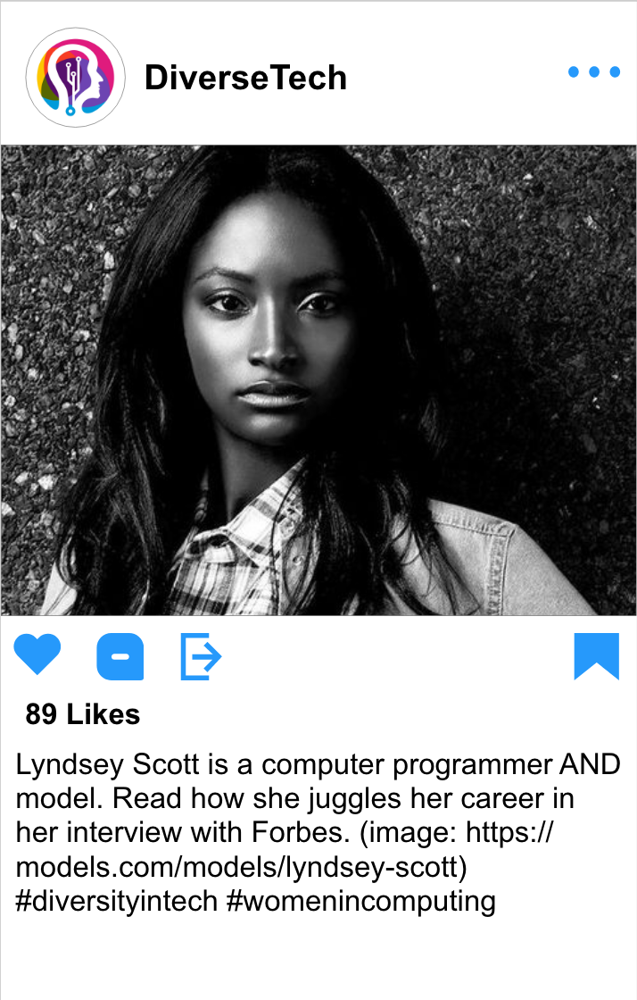

Here is what Maddie's original sketches of the social media posts looked like:

Here is what they look like now, designed with Adobe XD:

Here is a link to a survey about Lyndsey Scott that we conducted to gather people's opinions about our social media posts: Survey